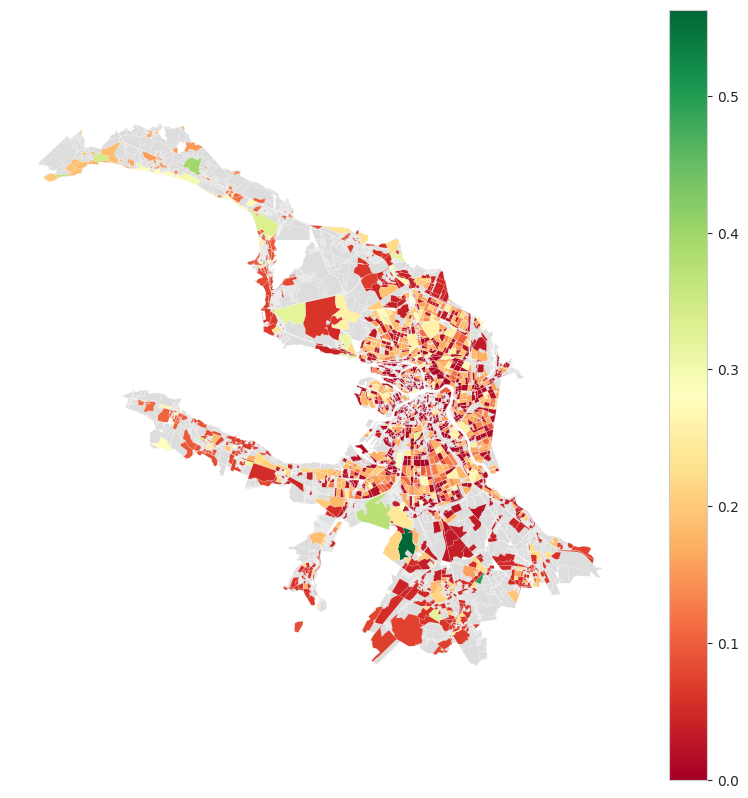
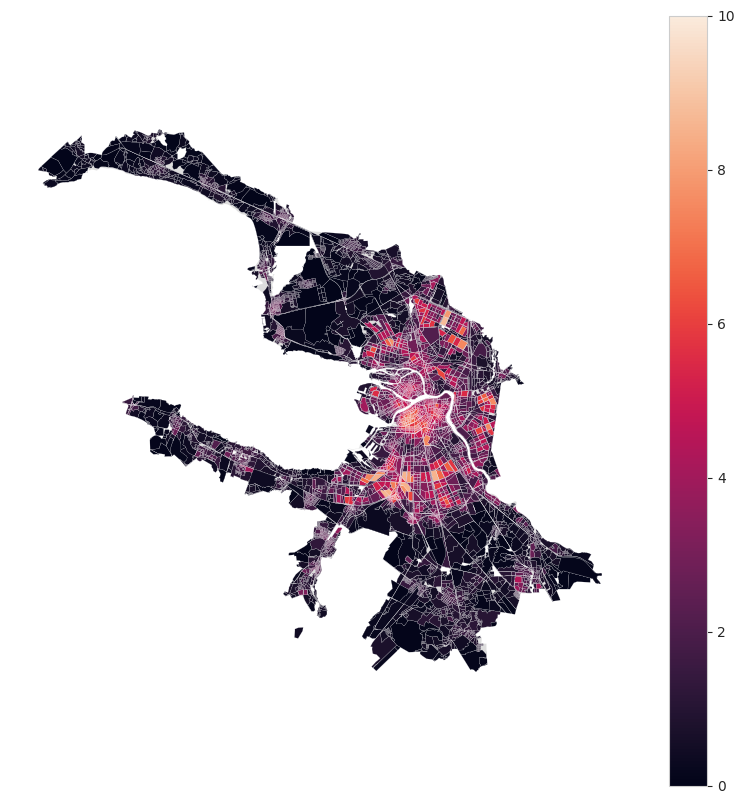

Centrality
[5]:
from blocksnet import City, Centrality, PopulationCentrality
city = City.from_pickle('../data/model.pickle')
Centrality based on connectivity and services
[6]:
centrality = Centrality(city_model=city)
result = centrality.calculate()
[7]:
result.head()
[7]:
| geometry | connectivity | density | diversity | centrality | |
|---|---|---|---|---|---|
| id | |||||
| 0 | POLYGON ((354918.622 6625258.829, 354901.464 6... | 61.7 | NaN | NaN | NaN |
| 1 | POLYGON ((355412.142 6623378.149, 355411.700 6... | 64.4 | NaN | NaN | NaN |
| 2 | POLYGON ((353934.329 6625429.433, 353923.453 6... | 58.0 | 0.000003 | -0.000000 | 0.036894 |
| 3 | POLYGON ((355099.099 6623847.765, 355074.808 6... | 63.8 | 0.000010 | 0.693147 | 0.211642 |
| 4 | POLYGON ((352766.168 6621954.748, 352744.412 6... | 64.6 | 0.000001 | 0.693147 | 0.212659 |
[8]:
Centrality.plot(result, figsize=(10,10))

Centrality based on population
[9]:
centrality = PopulationCentrality(city_model=city)
result = centrality.calculate()
[10]:
result.head()
[10]:
| geometry | population_centrality | |
|---|---|---|
| id | ||
| 0 | POLYGON ((354918.622 6625258.829, 354901.464 6... | 0.30 |
| 1 | POLYGON ((355412.142 6623378.149, 355411.700 6... | 1.15 |
| 2 | POLYGON ((353934.329 6625429.433, 353923.453 6... | 0.39 |
| 3 | POLYGON ((355099.099 6623847.765, 355074.808 6... | 0.80 |
| 4 | POLYGON ((352766.168 6621954.748, 352744.412 6... | 0.81 |
[11]:
PopulationCentrality.plot(result, figsize=(10,10))
